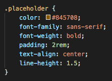
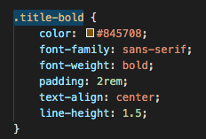
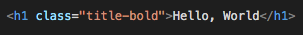

19 November 2020 | S2-Tech
Favourite Text Layout - Class
During your career as a Web Developer you are going to notice that you have a few favourite or go-to Font layouts for texts.
You may want to use the same Text Layout throughout your website. But you dont want to keep copying and pasting those same CSS rule-sets for every element you choose.
You can easily create one Rule-set that links to a class of your choice.
To start, go and find your favourite rule-set or you can create one from scratch in CSS. Choose all the declorations you want.
Next, choose an appropriate name of your choice which will become the new Class name.
Finally within HTML add that Class name to any elements that you want to use that rule-set on. Also another cool thing with Classes is you can mix and match different rule-sets.
Page Navigation - ID
Let's say you have a webpage set up, with quite a bit of text or images etc. It then leads the user to scroll down the page. To save time for the user scrolling back up, you can create a 'Back to top' button, using an ID.
To start, you want to create an element at the bottom of the page to be an anchor. This can be text or you can create a button. Input the text as 'Back To Top'

Next you want to create an ID. The great thing with an ID is you can attach it to any element on your page to be used as a reference point. In this case you want the reference point to be the top of the page. In my case I am going to add an ID to my Nav element, and call the ID "Top".

You finally want to edit your 'Back To Top' element using the 'href' within the anchor. Inside the 'href', you first input a hash '#' followed by the ID 'Top'.